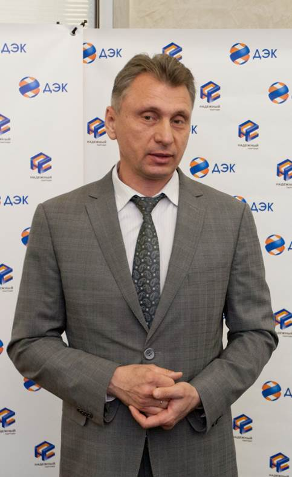

О компании
- выполнение функций гарантирующего поставщика;
- оказание услуг по регистрации групп точек поставки и получения допуска к торговой системе ОРЭМ в интересах крупных потребителей;
- оказание услуг третьим лицам, в том числе по сбору платежей за отпускаемые товары и оказываемые услуги;
- диагностика, эксплуатация, ремонт, замена и проверка средств измерений и учета электрической и тепловой энергии;
- оказание услуг по организации коммерческого учета;
- разработка, организация и проведение энергосберегающих мероприятий;
- инвестиционная деятельность;
- выполнение агентских функций по расчетам за коммунальные услуги на основании агентских договоров с гарантирующими поставщиками и ресурсоснабжающими организациями.
- оказание консалтинговых и иных услуг, связанных с реализацией электрической энергии юридическим и физическим лицам.
 Исполнительным директором ПАО «ДЭК» с февраля 2019 года является Александр Николаевич Юров.
Свою трудовую деятельность начал в 1992 году в 25 Государственном предприятии электрических сетей ВМФ (г. Владивосток) в должности главного инженера. С 1998 по 2000 год назначен начальником Государственного предприятия электрических сетей ВМФ (г. Владивосток). С 2000 по 2002 год работал начальником Инспекции энергонадзора ТОФ.
С 2004 по 2009 год занимал должность директора МУПВ «Владивостокское предприятие электрических сетей». С сентября 2009 по март 2017 года работал в Администрации г. Владивостока заместителем главы по ТЭК.
С апреля 2017 года по декабрь 2017 года назначен Вице-губернатором по ТЭК в Администрации Приморского края. С апреля 2018 года по февраль 2019 года работал в должности заместителя главы по ТЭК в Администрации города Владивостока, выполняя обязанности по развитию энергетики на краевом уровне, осуществляя контроль отраслей жилищного-коммунального и лесного хозяйств.
С 25 февраля 2019 года по 31 декабря 2019 года занимал должность Операционного директора ПАО «ДЭК», с 01.01.2020 по настоящее время занимает должность Исполнительного директора Общества.